Mod user manual
What each function of the modded printer does, why it exists, and how to use it. The mod adds a force monitor, resin heating control, a dynamic wait and dynamic lift, a fixed two-stage tilt, slow layers, settings profiles, manual exposure and multi exposure, a Z monitor and flex plate compensation, all driven from a password-protected dashboard served by the printer itself.
- Build 45 · mod 8.40 (normal)
- As of 31 October 2026
- Screenshots: live dashboard, every card fully expanded (example data where marked)
- Each section: picture · why it exists · how to use it
Getting started
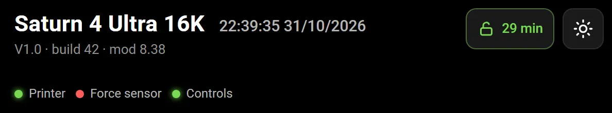
The stock printer has no web interface of its own beyond the slicer connection. The mod serves a dashboard from the printer itself, so any browser on the network can watch a print, change settings and manage files with nothing to install on a PC. The build and mod version in the header tell you at any moment which image is installed.
Open http://<printer address>/ in a browser on the same network; it redirects to the dashboard page that the printer's web server delivers on port 3030. The controls of the dashboard go to a small helper on port 8080.
- Printer
- The printer's own status connection (status, progress, files, print commands).
- Force sensor
- The live force feed of the mod. Red = no new readings (logger stopped, or the gauge board is silent).
- Controls
- The helper on port 8080. Red = buttons that change settings will not work.
Settings you change apply at once or at the next safe moment of a print, and they are saved on the printer: they survive a reboot. The dashboard stores nothing in your browser except a few per-browser choices (for example whether the Features list is open and the theme).
Theme. The button at the right end of the header switches the dashboard between the dark theme (default) and a light theme. The sun means “switch to light”, the moon “switch to dark”. The choice is remembered in that browser only; another browser or device starts dark.
Login and printer password
The dashboard can change the printer's settings, restart it, or even put the original firmware back. Anyone on the network could press those buttons, so everything that writes to the printer needs the printer password. Reading and watching stay open.
Until you log in the dashboard is view only: a banner says so and every control that changes something is greyed. A click on such a control opens the login dialog. The password is the printer's root (telnet) password; Stay logged in on this computer keeps the login after the browser is closed. The header button shows the minutes left.
- No time limit
- A login never expires by itself: it ends when you log out, when the printer restarts, or when the password is changed (at most 20 logins at a time).
- Log out · Log out all browsers
- Ends this login, or every login on every device. A restart of the printer also ends all logins.
- Change password…
- Needs the current password and the new one twice. Five wrong tries lock the login for 5 minutes. A firmware flash puts back the password of the image; the public release image uses a generic password, so change it after flashing.
Status card
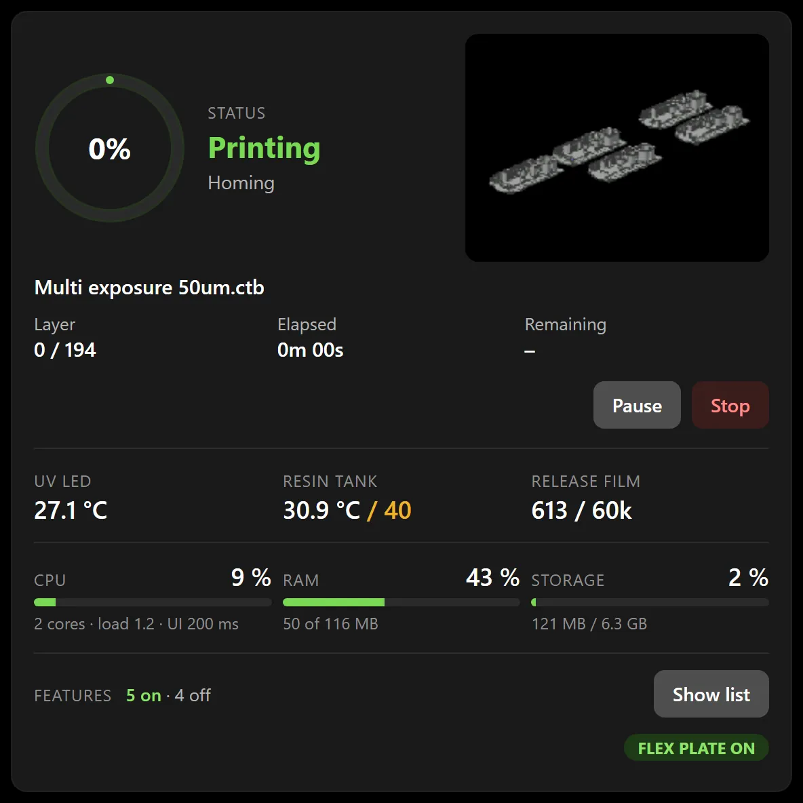
During a print the text column under the ring ends with Z position: the print height printed so far (plate position minus the Z zero, read once per layer after the retract; see the Z monitor).
To follow a print from any room without walking to the touch screen, and to see the health of the machine (CPU, memory, free space, film wear) that the stock screen does not show.
- Ring and status: progress in percent (layer / total layers, as the printer screen), the printer state and the print phase.
- Thumbnail and file name of the current or last job, with Layer, Elapsed and Remaining. Remaining comes from the pace of the last five layers, so it stays right when the dynamic wait shortens the waits.
- Pause / Resume and Stop during a print. Stop asks for confirmation: a stopped print cannot be resumed.
- Temperatures: UV LED and resin tank (vat), and the release film counter (layers on the current film).
- System row: CPU, RAM and storage of the printer's computer. Tap CPU for the UI loop sleep, tap Storage for every partition.
- Features row: how many features are on and Show list. Small pills next to it say EDITED while a manual exposure time is set and FLEX PLATE ON / OFF / CUSTOM for the plate compensation. The cards that are not features (Flex Plate, Tilt Move, Z monitor) open from the Settings and Developer cards.
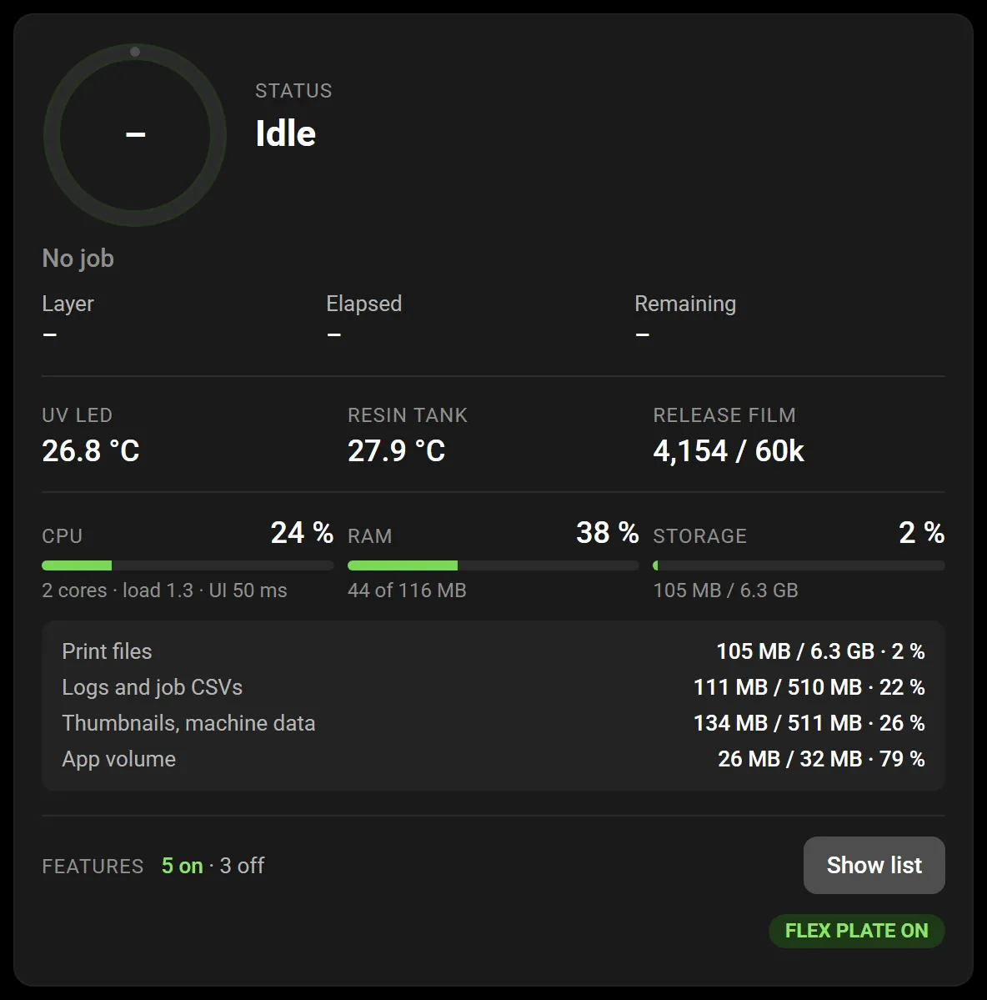
Print alerts
When the printer stops a print by itself (for example the foreign matter guard), the stock screen shows a message but the dashboard showed nothing: from another room you only saw that the print had ended. The dashboard now tells you why.
A Print alert dialog opens in the browser when the printer's own log reports one of these during a print: foreign matter detected (the force limit was exceeded while the plate moved down), too much resin or too little resin (the resin level is outside the lines), resin probe failed, auto-leveling failed, force sensor calibration failed, homing failed, or a print error code. Each alert is shown once; OK closes it. If the dashboard was closed when it happened, the dialog appears at the next visit.
/media/mmcblk0p2/log1) so the line can be added.CPU and UI loop sleep
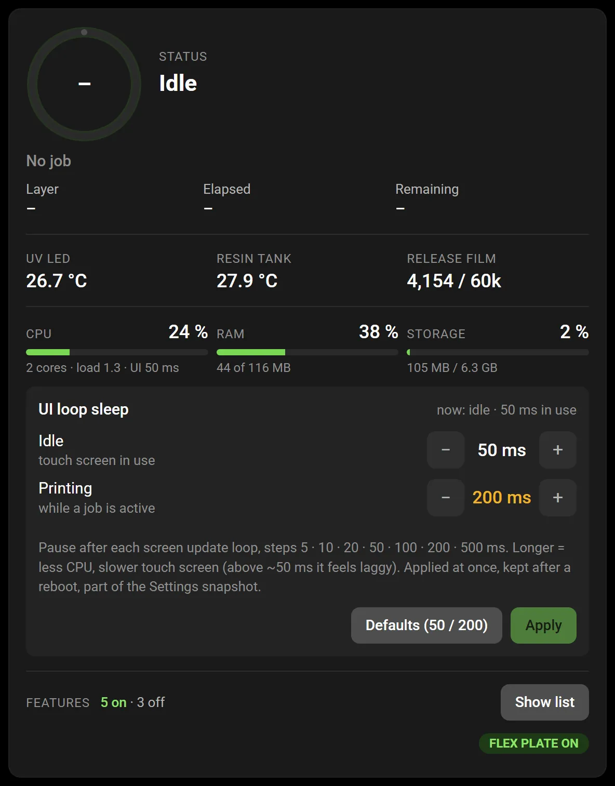
The stock firmware keeps both CPU cores at 100 % all the time, even when idle: three loops of the app never pause (the touch-screen loop, a camera scan and a network poll). A patch adds short sleeps to all three; this setting lets you choose the touch-screen one. Nobody touches the screen during a print, so the printing value can be much longer, which leaves the CPU free for the print and for the mod's measurements.
You set two values from 5 to 500 ms: Idle (no print running) and Printing (a job is active). Changes apply at once and are kept after a reboot. Defaults: 50 ms idle, 200 ms printing.
| UI loop sleep (idle) | Idle CPU | Touch screen |
|---|---|---|
| none (stock firmware) | ≈ 100 % | normal |
| 5 ms | 43 % | normal |
| 10 ms | 35 % | normal |
| 50 ms (default idle) | ≈ 18 % | good |
| 200 ms (default printing) | ≈ 7 % | sluggish, still usable |
| 500 ms (test) | ≈ 4 % | very slow |
The print's own timing (waits, exposure, moves) runs in a separate thread with its own 10 ms step, so this setting does not change print timing. The camera and network pauses are fixed at 20 ms.
Features list
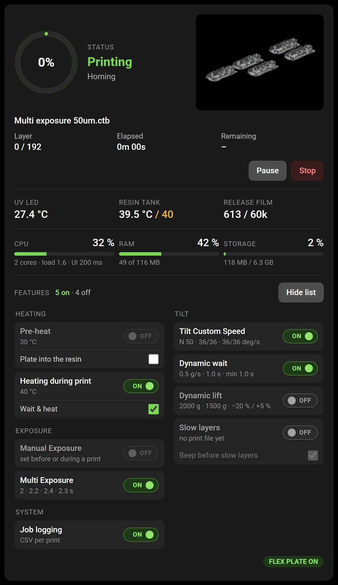
The mod has many features, each with its own card. The list is the one place to see what is on and off, and to switch features without opening their cards.
Show list opens it (the choice is remembered). The switch on the right turns the feature on or off with the same checks as its card; the name opens the card. The header shows the count: “5 on · 3 off”.
- Heating
- Pre-heat (with Resin mixing, section 29) and Heating during print (with Wait & heat).
- Exposure
- Manual Exposure: on while a bottom or normal exposure time set from the dashboard is armed or in force (section 22). Switching it off puts the file's times back; it works with or without a print job. Multi Exposure: own UV time per screen quadrant (section 23); the two exclude each other.
- Tilt
- Tilt Custom Speed, Dynamic wait, Dynamic lift, Slow layers (with Beep before slow layers).
The two-stage fix and the gauge sync have no row: the fix is always on and the gauge sync is on by default (its switch is in its card). The name of a row opens its card; Flex Plate, Tilt Move and Z monitor have no row (Flex Plate opens from the Settings card, the other two from the Developer card).
Resin heating
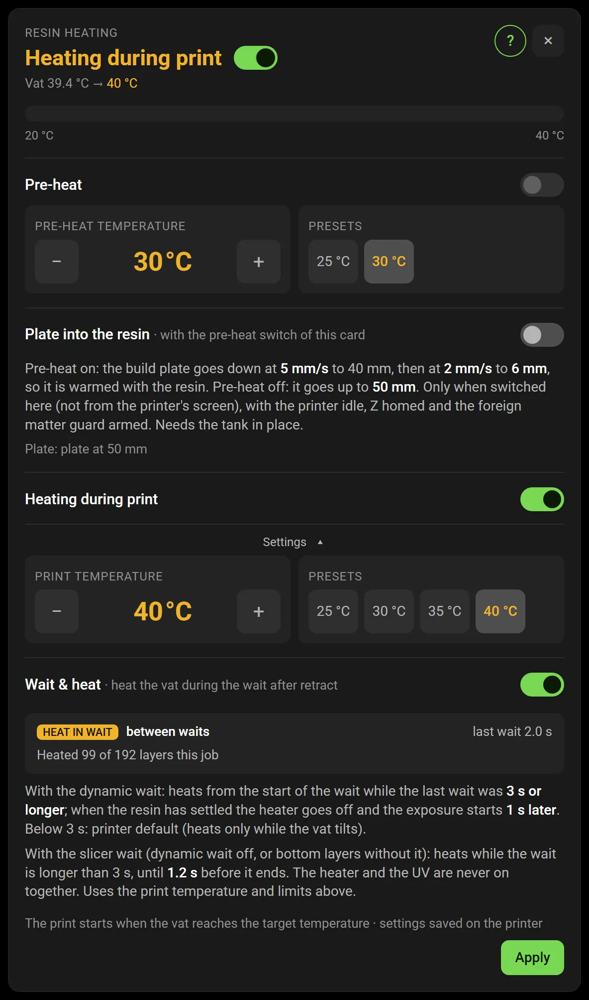
Warm resin is thinner: it flows back under the part faster after each peel and needs less force to release. Setting the heater from the browser, with a wider range than the touch screen offers, makes it easy to keep the vat at a steady, known temperature for every print.
Open it from the Features list (click Pre-heat or Heating during print).
- Pre-heat
- Heats the vat now, while idle, to 20–40 °C. Above 30 °C the card warns: the resin is not stirred and the vat can get very hot.
- Heating during print
- Keeps the vat at the print temperature, 20–50 °C, during a job. The print starts when the vat reaches the target.
- Resin mixing
- The old “Plate into the resin” option is gone; resin mixing (section 29) does the same job better: it moves the plate in the resin for a set number of minutes. Use it whenever the pre-heat temperature is above 30 °C.
- Plate rises before a print
- With pre-heat and this option on, Start print in the Files card first raises the plate to 50 mm, waits until it has arrived and only then starts the print. If it cannot be raised the print does not start and a message says why. A print started on the printer's own screen is not covered.
- Wait & heat
- Also heats in the wait after retract (section 11).
The force chart draws the vat temperature on its right axis. Press Apply to set the heater; the settings are saved on the printer.
Force monitor
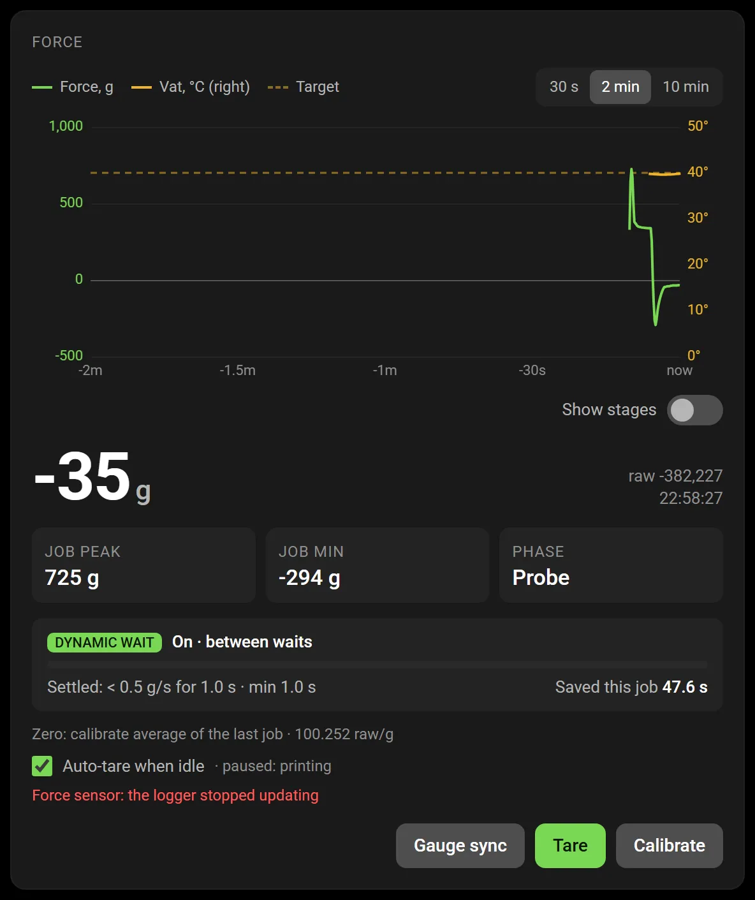
Peel force and the time the resin needs to settle were invisible on the stock printer. Measuring them shows which layers are risky and how much each setting helps, and it is the basis of the dynamic wait and the dynamic lift. The tare in the wait removes the slow drift of the zero during a long print, so each layer's peel is measured from its own baseline.
The printer has a force sensor (strain gauge) that the stock firmware uses for levelling. The mod reads its values passively, about 5 times per second, and turns them into grams.
- Live force in grams, with the raw sensor value and the time of the reading.
- Job peak, Job min and Phase (calibrate, probe, level, exposure, lift, drop, settle, rest).
- Chart of the last 30 s, 2 min or 10 min: force in green on the left axis, vat temperature on the right axis (0–50 °C). Hover or tap for exact values.
- Auto-tare when idle: with no print for 10 s the zero follows the sensor every 10 s, but only when the last 10 s are steady and within 25 g of the current zero. A weight on the plate is therefore never tared away.
- Tare (green when on) switches on tare in the wait: in every wait after retract, once the force has settled, the zero moves to that settled level. It works with or without the dynamic wait.
- The buttons Dynamic wait and Dynamic lift open their cards and are green while the feature is on; Gauge sync and Calibrate open theirs. Cards opened from here stack below in click order, the last on top.
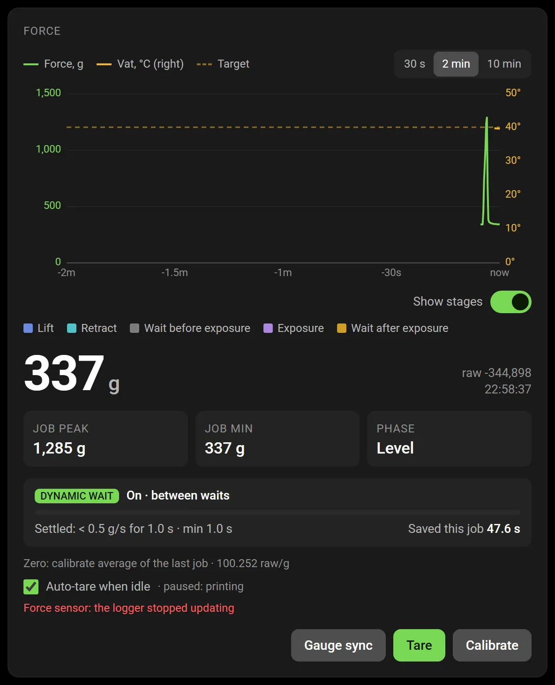
Show stages
The Show stages switch above the chart shades each stage of a layer behind the force line: Lift (release), Retract (return), Wait before exposure, Exposure and Wait after exposure. The tooltip names the stage and the layer. The CSV has the phase rest for the wait after exposure.
Calibration
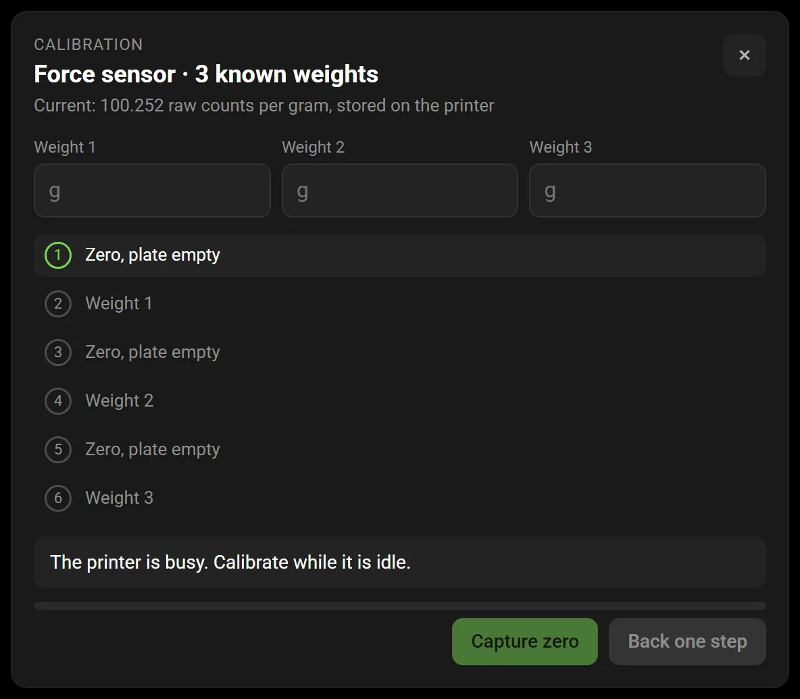
The sensor reports raw counts that differ from printer to printer. A three-weight fit is more reliable than a single weight and shows at once whether the sensor is linear. Each calibration is also appended to sglog/calibration.log.
Type the three weights, then follow the six steps: empty plate, weight 1, empty, weight 2, empty, weight 3. Each capture waits until the reading is steady (15 readings varying by less than 150 counts), then averages 25 readings. The result k (counts per gram) is the slope of a straight-line fit through all points.
Dynamic wait after retract
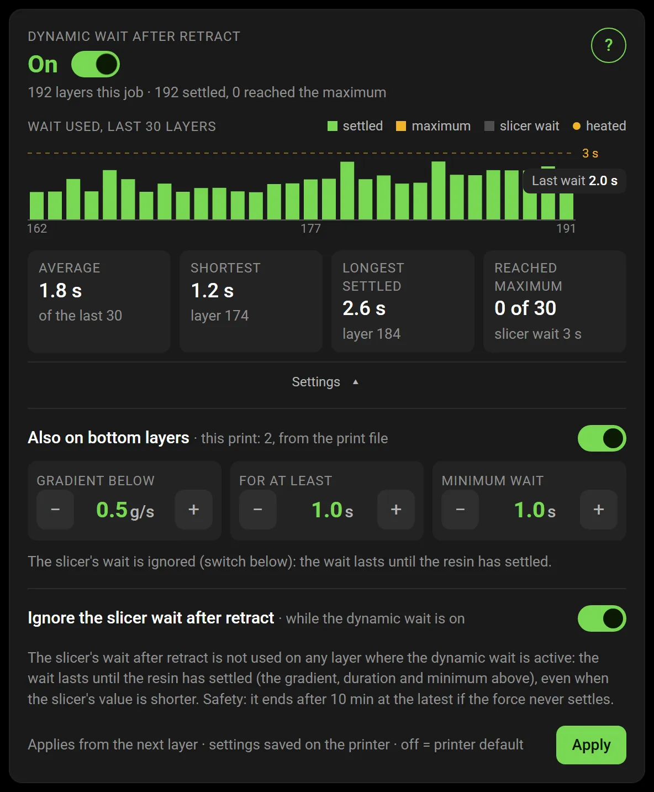
A fixed wait has to cover the worst layer. Measured on test prints, settling took 24 s on an early large layer and about 1 s later on; big cross-sections took far longer than small ones. A replay of the rule on a full test print cut the total wait by 27 % (49 → 36 minutes) while the force at the moment of exposure stayed within a few grams. Exposing only after the resin has settled keeps layers consistent without wasting time on easy layers.
After the vat returns, the printer waits a fixed time (the slicer's “wait after retract”) before the next exposure. With the dynamic wait on, the mod watches the force during that wait and starts the exposure as soon as the resin has settled. Open the card from the Force card or the Features list; the ? button shows or hides the explanations.
The settling rule
- Gradient below
- 0.2–5 g/s (default 1.0). The force must change slower than this…
- For at least
- 0.6–3 s (default 1.0). …over this window (a straight-line fit of the readings). The test needs a window of 2 s or more to be quiet: with 1.0 s the slope noise (0.38 g/s) is as large as a 0.5 g/s limit.
- Minimum wait
- 1 s or more, no upper limit (default 1.0). Never shorter than this.
- Force Variation 1/2 · Timespan 1/2 · Layer Switch
- Two independent sets: a wait is settled when the force changes by less than Force Variation over the last Timespan. Set 1 (Force Variation 1, Timespan 1) is used on layers 1 to the Layer Switch (numbered as in the slicer, the first layer is 1), set 2 (Force Variation 2, Timespan 2) on every layer after it. With Layer Switch 0 set 2 applies to the whole print and set 1 is greyed out.
- Min Wait before · Transition Layer · Min Wait after
- The minimum wait has its own switch, independent of the Layer Switch: Min Wait before (1 s or more) on layers 1 to the Transition Layer, Min Wait after (1 s or more) on every layer after it. With Transition Layer 0 Min Wait after applies to the whole print and Min Wait before is greyed out. Saved in
sglog/WAIT2; not part of the Settings snapshots. - Also on bottom layers
- On by default. Off: bottom layers keep the slicer wait. The number of bottom layers is read from the print file.
- Ignore the slicer wait after retract
- While the dynamic wait is on, the slicer's wait is not used on any layer where the dynamic wait is active: the wait lasts until the resin has settled, even when the slicer's value is shorter. It ends after 15 min at the latest if the force never settles. Switching it off during a wait puts the slicer value back at once.
Apply is faded while nothing differs from what the printer runs, and stays faded for a moment after you press it until the printer reports the new values. On the wait chart, hover (or drag a finger) over a bar to see its layer, the wait, how it ended (settled, maximum or slicer wait) and whether it was heated. The Manual Exposure chart works the same way: layer, file time and used time.
Without “ignore”, the slicer's wait is the maximum: the wait is only ever shortened. Set a long wait in the slicer and let the dynamic wait end it. The chart shows the wait used on the last 30 layers (settled, maximum, slicer wait, heated), with the last wait tagged, and four tiles: average of the last 30, shortest and longest settled wait with their layers, and how many reached the maximum. Apply does not close the card; only the × does.
Wait & heat
During a print the stock firmware heats only while the vat tilts. With long waits the vat cools between pulses. Heating during the wait, when nothing else happens, holds the temperature without heating during the exposure.
- With the dynamic wait: heats from the start of the wait if the previous wait was 3 s or longer. When the resin has settled the heater goes off and the exposure starts 1.15 s later.
- With the slicer wait (dynamic wait off, or bottom layers without it): heats when the wait is longer than 3 s, until 1.2 s before it ends.
- The heater and the UV are never on at the same time. Print temperature and the heater's own safety limits apply.
Gauge sync
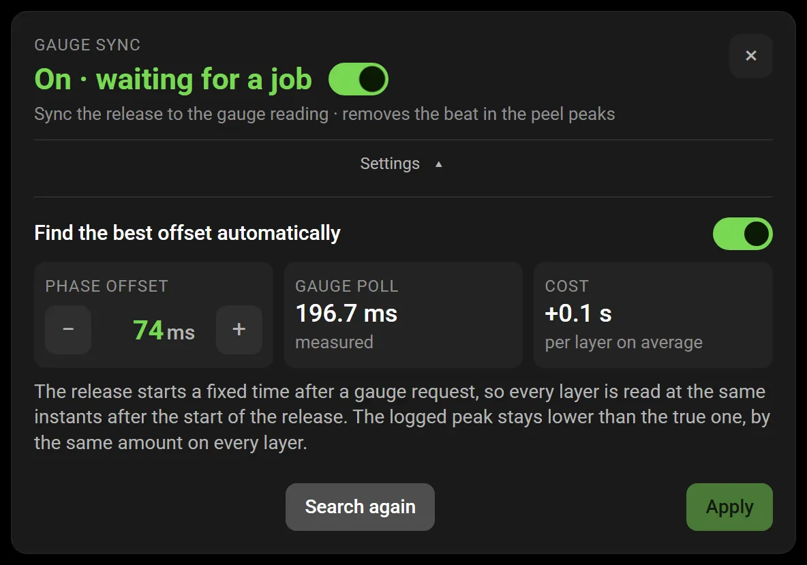
The app reads the force gauge every 196.7 ms, while a peel pulse is only about 0.27 s wide. The logged peel peak therefore depends on where the readings fall (up to about ±12 %), and with a constant layer period the error beats about every 2.5 minutes. Syncing the release to the gauge makes every layer be read at the same instants, so the logged peaks are comparable from layer to layer.
With the sync on, the release of every layer starts a fixed time after a gauge request. It adds 0 to 197 ms before a release (about 0.1 s per layer); only the release is delayed, not the start-up moves.
- Sync the release to the gauge reading
- On by default.
- Find the best offset automatically
- From release 3 of a job, 17 releases: one trial offset (poll interval ÷ 8 apart) on every second layer, reference layers in between. The offset with the highest logged peak relative to its neighbours is kept if it wins by more than 3 %. Search again repeats it.
- Phase offset
- The offset in ms; editable only when the automatic search is off.
- Search paused
- While Dynamic lift is on the search does not run (Dynamic lift changes the start speed from layer to layer, which the comparison cannot tolerate): the offset stays as it is, and the search runs again, once per job, when Dynamic lift is off.
Tilt speed
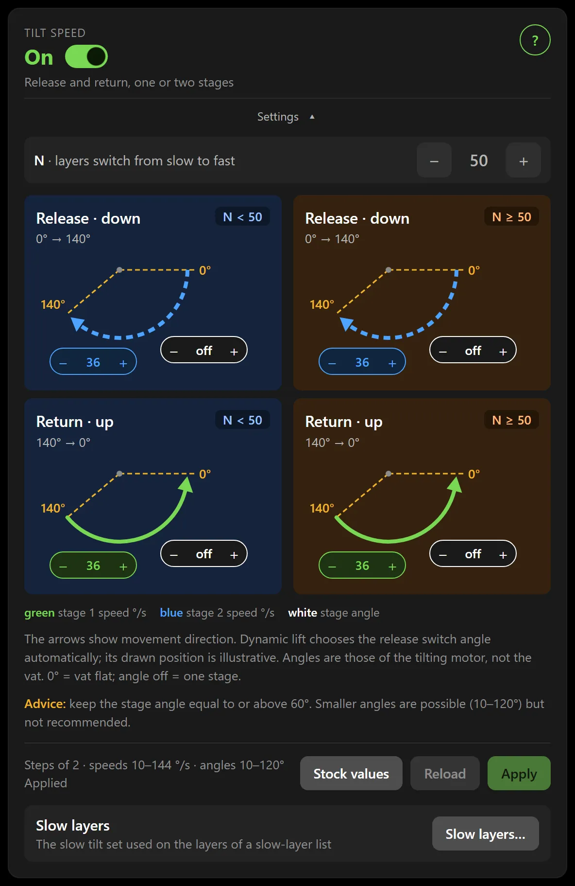
The stock firmware has two-stage tilt settings but they do not work: it sends stage 2 only 3 ms after stage 1, and the tilt motor chip adds stage 2's distance to where the motor still is, not to where stage 1 will end. The release stopped near 80° instead of 140°, and the return overshot zero by about 60°. That is why stock machine files keep the stage angles at 0. The mod fixes this, so the peel speed can finally be shaped.
The fix gives the chip the final position at once and only changes the speed when the motor passes the stage angle. The position can never be wrong; at worst the rest of the move runs at stage 1's speed. Tested: two speeds in both directions, every move ending exactly at 0° and 140°.
The Saturn 4 Ultra peels by tilting the vat. Each move runs in one or two stages: stage 1 at one speed up to a stage angle, stage 2 at another speed for the rest. The card shows four dials: release (0° → 140°) and return (140° → 0°), each for the first N layers and for the layers after.
- N
- The layer where the profile switches from the first block (blue tint) to the second (orange tint).
- green
- Stage 1 speed, °/s.
- blue
- Stage 2 speed, °/s.
- white
- Stage angle. “off” = one stage at one speed (release uses the blue speed, return the green one). While Dynamic lift is on the release angle shows auto.
Steps of 2. Speeds 10–144 °/s, angles 10–120° or off. The angles are those of the tilting motor, not of the vat itself, which follows the motor through an eccentric (140° of the motor are about 3° of the vat).
- Custom speeds (switch at the top): ON = the printer uses the values set in this card; OFF = the stock speeds are used, the values stay stored. While Dynamic lift is on, the card's values are used whatever the switch says.
- Apply sends the values. When idle they apply at once; during a print they go in at the next wait after retract, when the vat is still. They are saved in the printer's machine settings. Stock values fills the dials with the factory profile (N 50; 36 °/s before, 72 °/s after; one stage), Reload reads the printer's values again.
- The two-stage fix is always on. It does nothing when no stage angle is set and no feature uses it; stage angles, the gauge sync and Dynamic lift rely on it.
Dynamic lift
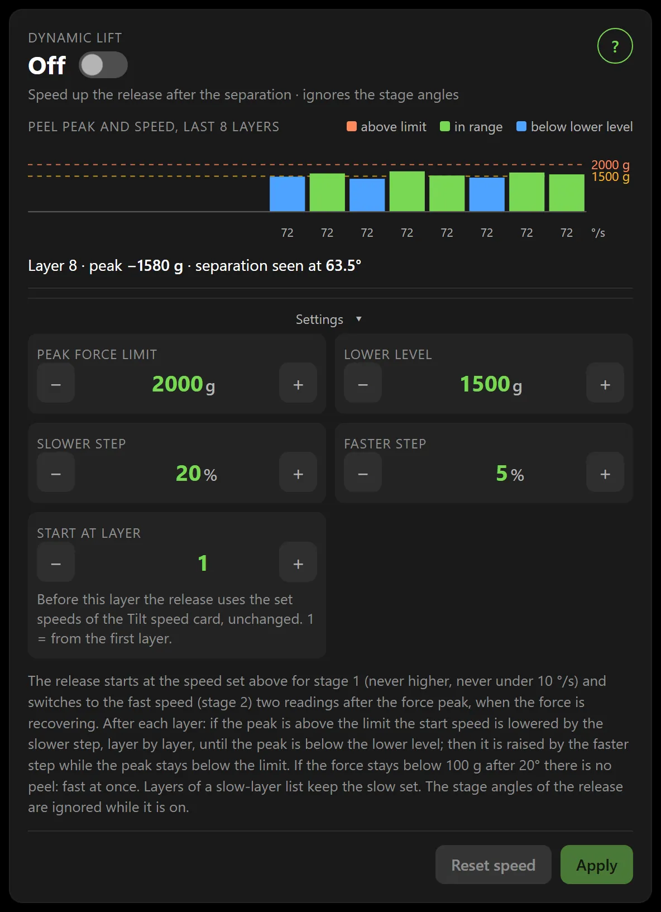
A slow peel is gentle but the whole layer is slow; a fast peel saves time but can overload a layer. The force peak happens at the moment the layer separates from the film, and after it the rest of the release does not need to be gentle. Dynamic lift starts the release at a speed that keeps the peak inside a limit, layer by layer, and goes fast once the layer has separated, so most of the time is saved without raising the peak.
Off by default. While it is on, the release angles of the dials show auto: the manual release stage angles are ignored. The return is not touched.
The graph works with the function off. During a print the card only watches every release that Dynamic lift is not acting on (function off, layers before its start layer, slow layers) and shows its peel peak, so the peaks of a normal print can be compared with a print that uses Dynamic lift. Nothing is changed: no speed, no controller; the CSV columns dl_peak_g, sep_deg and sep_kind are filled as well. With the function off the text under the graph says “separation seen at X°”, “no peel seen” or “separation not seen”.
- Start speed
- The release stage 1 speed set in the dials, times a factor the controller adjusts layer by layer. Never above the set speed, never below 10 °/s.
- Speed-up
- When the gauge has seen a negative peak of at least 100 g and then two readings that each rise, the rest of the release runs at the stage 2 speed of the dials. If the force stays below 100 g after 20° of tilt there is no peel: the fast speed starts at once. The stage 2 speed must be above the start speed.
- Peak force limit · Lower level
- Defaults 2000 g and 1500 g. After each layer: if its peak is above the limit the start speed is lowered by the slower step, and keeps being lowered until the peak is below the lower level; then it is raised by the faster step while the peak stays below the limit.
- Slower step · Faster step
- Defaults 20 % and 5 %.
- Start at layer
- The first layer (1 = from the first layer, as numbered in the slicer and in the Slow layers lists) from which Dynamic lift acts. Before it the set speeds of the Tilt speed card are used unchanged. The box appears when the printer's library knows it.
- Reset speed
- Start speed back to the set speed. It also starts at the set speed whenever a new print begins.
I6 C/D, 36°/s² on this printer): a large speed jump takes about a second. Dynamic lift works while job logging is off and is part of the Settings snapshot.Slow layers
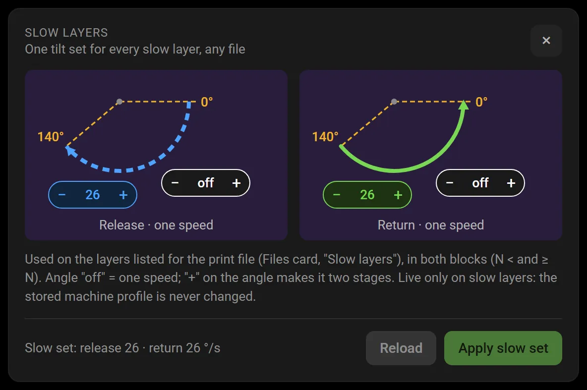
Some prints have a few delicate layers: an overhang, a thin bridge, a large flat section. A slow peel there avoids failures, but slowing the whole print costs hours. Listing those layers keeps the rest of the print fast. The slow values are never saved to the printer's machine settings, so a crash or reboot cannot leave the printer slow.
The printer tilts with the normal profile. For the layers you list it uses one fixed slow set instead. The list belongs to one print file; the slow set is the same for every file.
The slow set
Two dials, release and return. Default: one stage at 18 °/s both ways. “+” on the angle makes a direction two-stage. Apply slow set saves it.
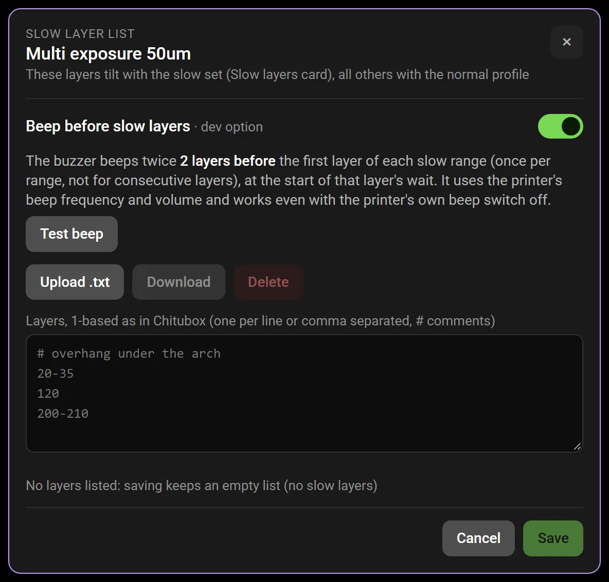
The layer list
Open it with the Slow layers button under a file (local files only). Type the layers or upload a .txt, then Save. The button then shows the count, for example “Slow layers · 28”. Layers are numbered from 1, as in Chitubox.
# overhang under the arch 20-35 120 200-210, 240
- Single layers (
120) or ranges (20-35, both ends included), one per line or separated by commas or spaces;#starts a comment. Overlapping ranges are merged. A reversed range or anything that is not a number rejects the whole list. - The list is stored as
sglog/layertilt/<file name>.txtand read again at every layer, so a change during a print applies from the next layer.
During a print
At the start of the wait before a listed layer the slow set is written into both profile blocks, so that layer releases and returns slowly. At the first unlisted layer the normal profile comes back; it also comes back when the print stops or ends. A purple strip on the Tilt speed card shows “Slow layer · layer 127 of 267” and the next slow layer. The Features switch Slow layers ignores all lists when off. Beep before slow layers makes the buzzer double-beep once per slow range, 2 layers before its first layer, at the start of that layer's wait; it works with the printer's own beep switch off.
Files
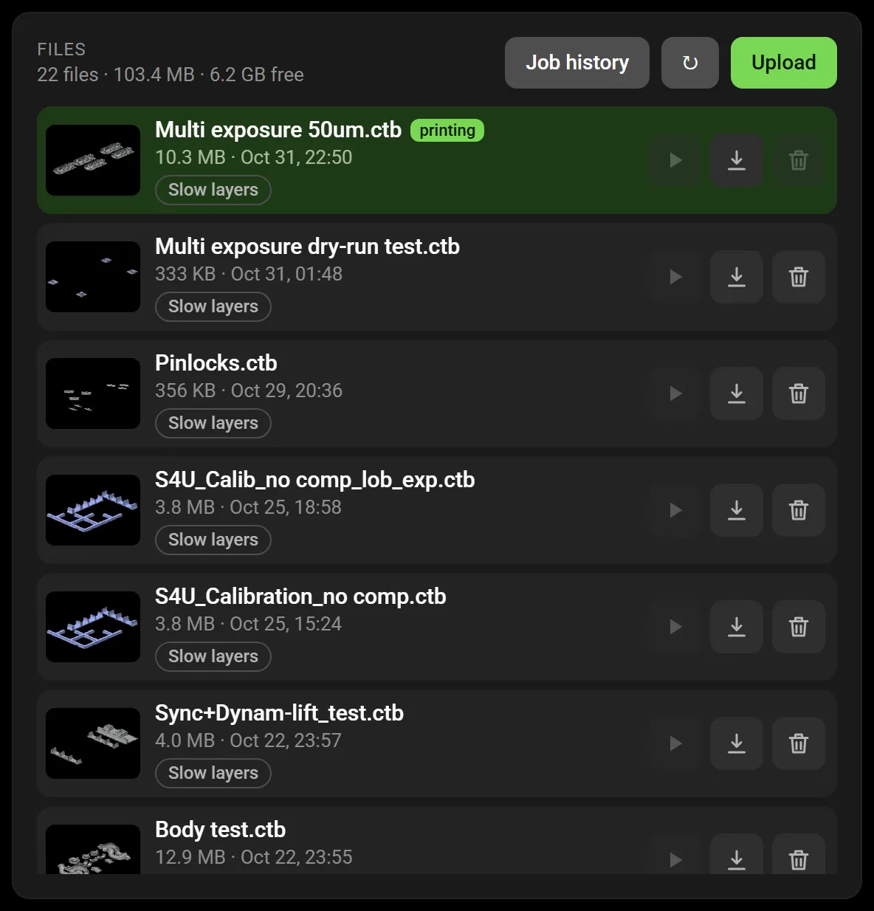
To manage and start prints without the slicer or the touch screen, with a safety checklist before every start and, from the Start print dialog, the settings that suit the file.
- Lists the
.ctband.goofiles on the printer and on a USB stick, newest first, with thumbnail, size and date. Under a name: the Slow layers button (section 15) and the Profile · name tag (section 17). - Download and Delete (with confirmation; the file being printed cannot be deleted).
- Upload sends a file straight to the printer in 1 MB parts, like the slicer does. The printer checks the whole file's checksum before keeping it.
- Job history opens the job logs (section 19).
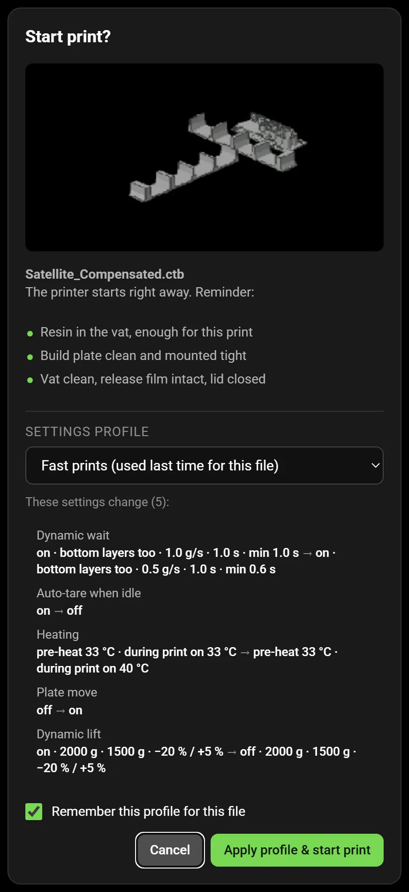
Start print
Print (when idle) asks you to confirm three checks: resin in the vat, build plate clean and tight, vat and film intact with the lid closed. With profiles saved (section 17) the dialog also has a Settings profile list: “Keep the settings as they are now” or one of the profiles; the one used last time for this file is preselected. The dialog lists the settings that would change. Remember this profile for this file keeps the choice. The profile is applied right before the print starts; if it cannot be applied the print does not start. If Pre-heat and Plate into the resin are on, the plate rises to 50 mm first (section 7), and the dialog says so.
Settings and profiles
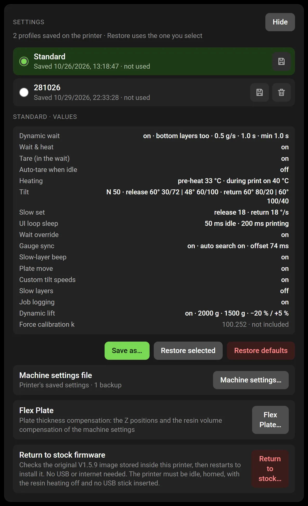
Different prints need different settings: a fast profile for sturdy models, a gentle one for delicate ones. Profiles let you save a whole set of the mod's settings under a name, return to a known-good set in one step, and let a print file start with the settings that suit it.
The card is collapsed by default (Show). The first row, Standard, is the single saved snapshot of earlier builds; it cannot be deleted. Every button asks first and shows exactly what it will set.
- Save as…
- Asks for a name (1–32 letters, digits, space, - _ . ; “Standard” is taken; Enter saves) and stores the settings the printer has now. A name that exists asks before it is replaced.
- Select a row
- Click a row to select it. The values below the list are those of the selected profile.
- Restore selected
- Puts the selected profile's settings on the printer. The force calibration (k) and “pre-heat on now” are not changed.
- Overwrite / delete icons
- Overwrite a profile with the current settings; delete a profile (the files that used it fall back to “Keep the settings as they are now”).
- Restore defaults
- Sets the defaults below. Your profiles are kept.
| Included in a profile | Default |
|---|---|
| Dynamic wait, bottom layers, gradient, window, minimum · ignore the slicer wait | off · bottom on · 1.0 g/s · 1.0 s · 1.0 s · off |
| Wait & heat · Tare in the wait · Auto-tare when idle | off · off · on |
| Heating: pre-heat temperature · heating during print · print temperature | 30 °C · on · 40 °C |
| Tilt profile (N and all four dials) · Custom speeds | stock: N 50, 36 / 72 °/s, one stage · off |
| Slow set · Slow layers · beep before slow layers | 18 °/s both ways · on · off |
| Gauge sync (on, automatic search, offset) | on · on · 0 ms |
| Dynamic lift (on, limit, lower level, steps) | off · 2000 g · 1500 g · 20 % · 5 % |
| UI loop sleep (idle · printing) · Job logging | 50 · 200 ms · on |
Not included: the force calibration (k), whether pre-heat is on right now, Manual Exposure, the slow-layer lists (they belong to the files), the machine settings file and Flex Plate. Profiles are files on the printer: sglog/profiles/<name>.txt; the link of a print file to its profile is sglog/fileprofile/<file>.txt.
Machine settings file
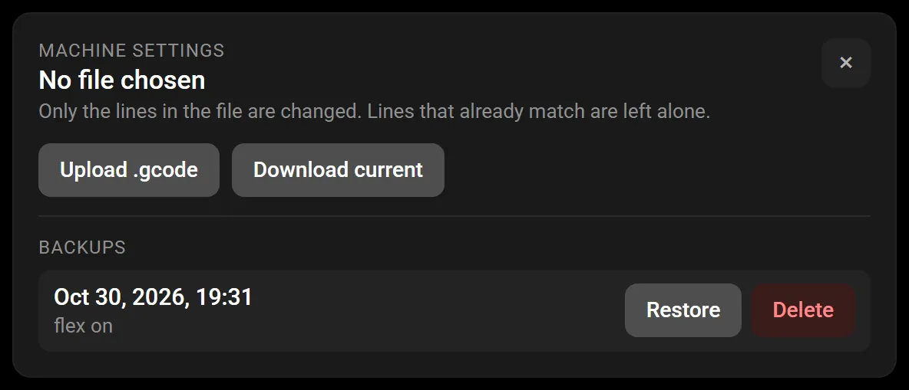
The printer keeps its machine parameters (currents, speeds, thresholds) in a saved file that can normally only be changed by a gcode file from a USB stick or by hidden menus. Changing them from the browser, with a preview and a backup, makes tuning safe and quick.
Settings card → Machine settings…: upload a machine .gcode (lines like M5000 I6 A0), see which values differ from the printer's, tick the rows, and apply. Values go in live where possible and into the saved file with its checksum; a backup of the file is made first (the last 10 are kept in sglog/machine_backups, each can be restored). A boot guard puts the last good backup back if the saved file is ever invalid. Download current saves the printer's present values as a gcode.
Job history and logs
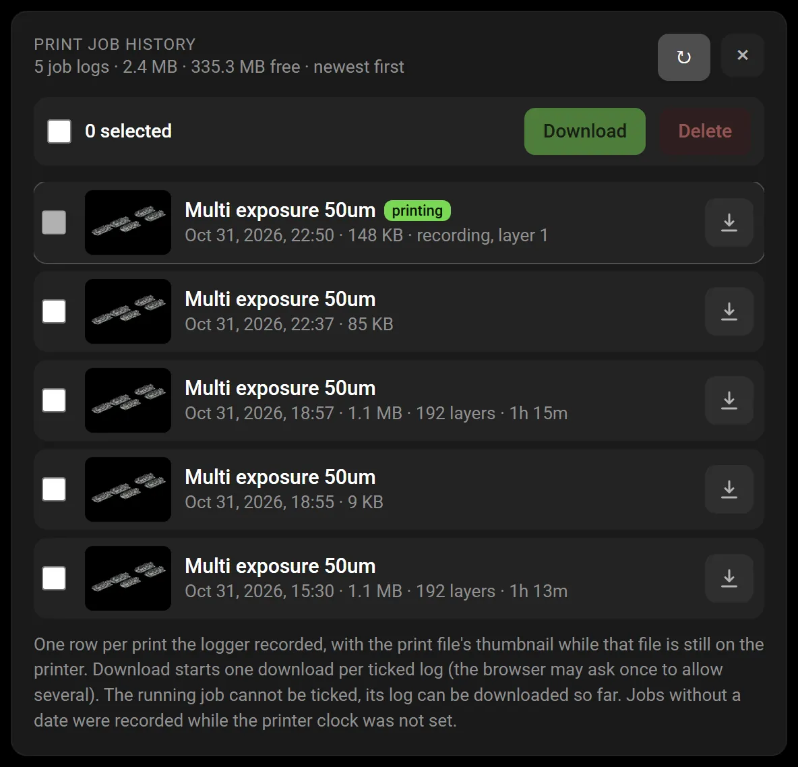
The logs are the evidence behind every setting in this manual: they showed the settling times, the peel forces per layer and the tilt bug, and they let you compare prints after a change.
Every print gets a log in /media/mmcblk0p2/sglog/: a .csv with one row every 0.5 s and a .txt header (print file, zero, k). The card (Files card → Job history) lists them with thumbnail, layers and duration; tick several to download or delete them at once (never the running job). The oldest logs are deleted when all logs together pass 200 MB; one log stops growing at 50 MB.
CSV columns: time_utc, t_s, layer, phase, raw_last, value, value_min, value_max, n, raw_min, raw_max, g, g_min, g_max, tank_c, wait_s, wait_end, heat_w, cpu, then the tilt columns rel_v1, rel_v2, sep_deg, sep_kind, ret_v1, ret_v2, dl_peak_g, dl_f (release and return speeds used, separation angle, peel peak and Dynamic lift factor; filled also with Dynamic lift off), the exposure columns expo_file, expo_set, expo_used and the Z columns z_ret_mm, z_step_um (the print height after the retract and its step from the layer before, section 24). Each row holds the last, minimum and maximum of its 0.5 s window; wait_end is settled, max or off; heat_w says whether the wait was heated.
Levelling log. Independent of the job logs, the printer appends one line per print job to /media/mmcblk0p2/sglog/LEVELS.csv at the job's first layer: time_utc, print_file, zero_machine, zero_axis, z_first, z_target. zero_machine is the Z zero (floor contact) that the auto-leveling of this job found; comparing it over many prints shows how repeatable the leveling is (all values in mm). zero_axis is the Z axis's own copy, which is only refreshed at a restart; z_first is the plate position at layer 1 and z_target the position the file asks for (zero + first layer height). The file is never deleted by the job history.
For detailed analysis a raw capture of every sensor message can be switched on by creating /media/mmcblk0p2/sgcap/ENABLE (checked every second, also mid-print); delete it to stop.
Developer card
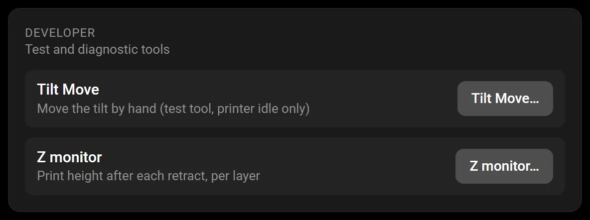
Tilt Move and the Z monitor are tools for checking and testing the printer, not for printing. They used to be buttons in the Status card; a card of their own keeps the Status card short.
The card has one row per tool and a button that opens its card: Tilt Move… (the next section) and Z monitor… (section 24). A button is only there when the printer's library supports the tool.
The third row is the Job logging switch (a CSV file per print, shown in the Job history card). It used to be in the Features list.
Tilt Move
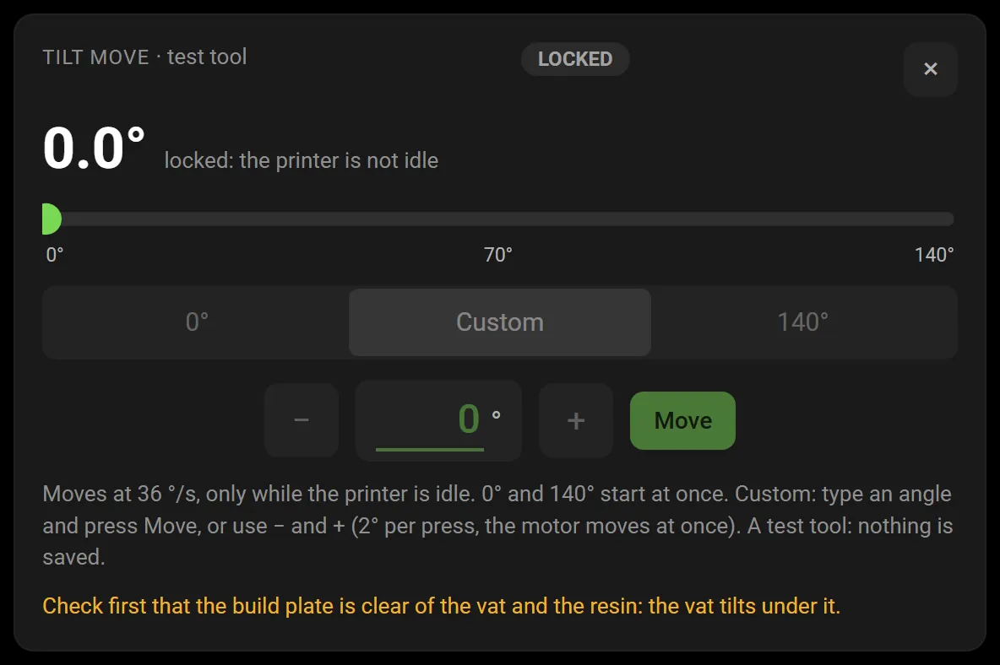
To test a tilt setting, look at the vat or check the tilt axis without starting a print or opening a menu: the vat can be tilted from the browser, to any angle from 0° to 140°.
Developer card → Tilt Move… opens the card. It shows the position (the app's own tracked tilt, 0° = vat flat, 140° = fully tilted) and three targets: 0° and 140° move at once; Custom takes a typed angle and Move, or − / +, which move the motor at once by 2° per press. The speed is fixed at 36 °/s. It works only while the printer is idle (no print job, tilt axis homed); otherwise the card is greyed out and says why. Check first that the build plate is clear of the vat and the resin: the vat tilts under it. Nothing is saved.
Manual Exposure
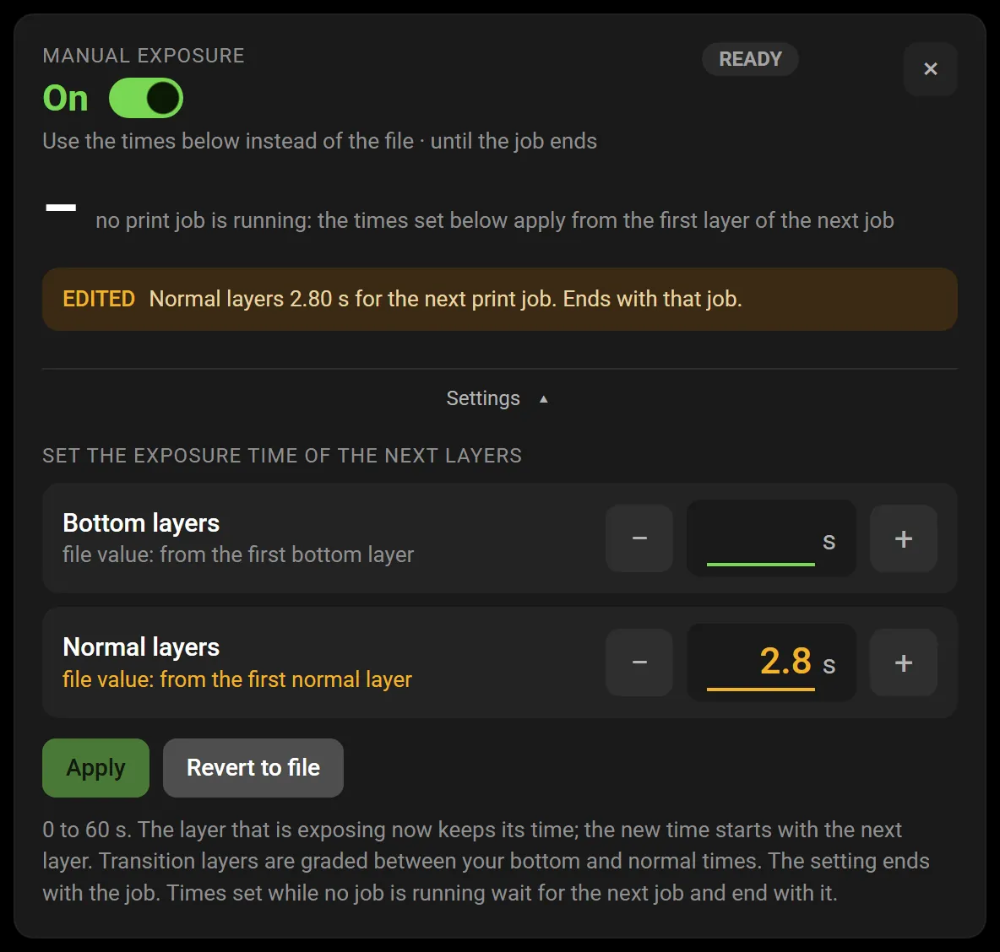
Exposure time is fixed in the print file, so a test print that comes out too soft or too hard has to be re-sliced. With this card you read what the file planned and what the printer actually used for each layer, and change the time of the following layers while the print runs.
The Features list row Manual Exposure (its name) opens the card. The times can be set with or without a print job. With no job the card says READY: the times you apply are kept and used from the first layer of the next job, and end with that job. During a print it shows the file's planned exposure and the time used per layer (a chart), three tiles (bottom, transition, normal) and two fields, Bottom layers and Normal layers, 0–60 s in steps of 0.1 s. Apply sets them from the next layer; the layer that is exposing now keeps its time. Transition layers are graded between your bottom and normal times. Revert to file goes back. The setting ends with the job and is never saved.
The Features list has a Manual Exposure switch: on = the times set with Apply are in force, off = back to the file's times; switching on again re-applies the last Apply of this job. Manual Exposure and Multi Exposure exclude each other: while one is on the other is switched off first. With no job the file's own times are not known yet, so the fields start empty. Tested by a write on a real print (4.5 s to 5.0 s); transition layers and a 0 s exposure are not tested yet.
Multi Exposure
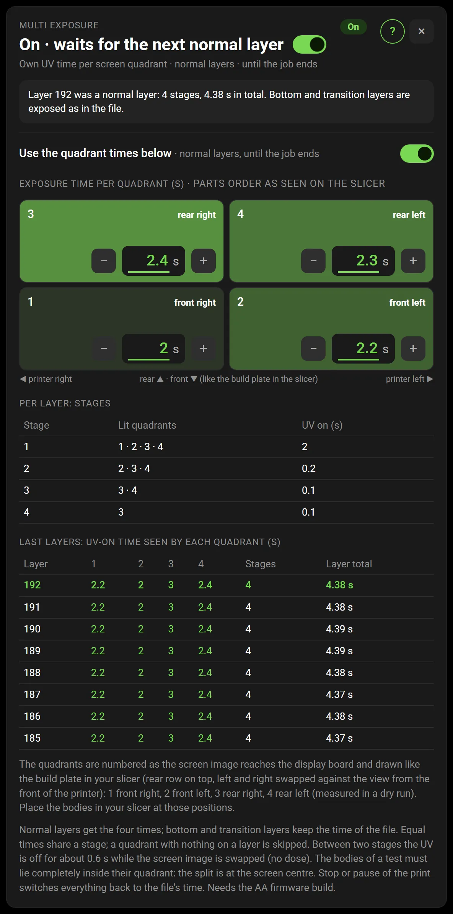
To find the right exposure time for a resin you normally print the same part several times with different times. Multi Exposure does it in one print: the build plate is split into four quadrants and each quadrant gets its own UV time on every normal layer. A test print with four identical bodies, one in each quadrant, shows four exposure times side by side.
Switch it on with the switch of the card (or the Features row) before or during a print. The four boxes are drawn like the build plate in your slicer; − and + change a time by 0.1 s, or type a value. The quadrants are numbered as the screen image reaches the display board: 1 front right, 2 front left, 3 rear right, 4 rear left (seen from the front of the printer; measured in a dry run). Place the bodies of your test in the slicer at those positions. The split is at the screen centre: a body must lie completely inside its quadrant.
Start at layer (box above the quadrant times, 1 = from the first normal layer): normal layers before it keep the time of the file, from that layer on the four times apply. Saved in sglog/MXFROM. The bar Stages and last layers below the quadrants hides or shows the two tables. The card shows only the On / Off switch (no status text).
- Per layer: stages
- The times are sorted; equal times share a stage. A layer is exposed in stages: all quadrants that still need UV are lit, and after each stage the finished quadrants are switched dark. A quadrant with nothing on that layer is skipped.
- The swap
- Between two stages the UV is off for about half a second while the screen image is swapped; that time gives no dose. The layer takes the longest time plus these swaps.
- Last layers
- The UV-on time that each quadrant really got, measured per layer. In the dry run the times 2, 4, 6 and 8 s were reproduced to a few milliseconds.
Z monitor
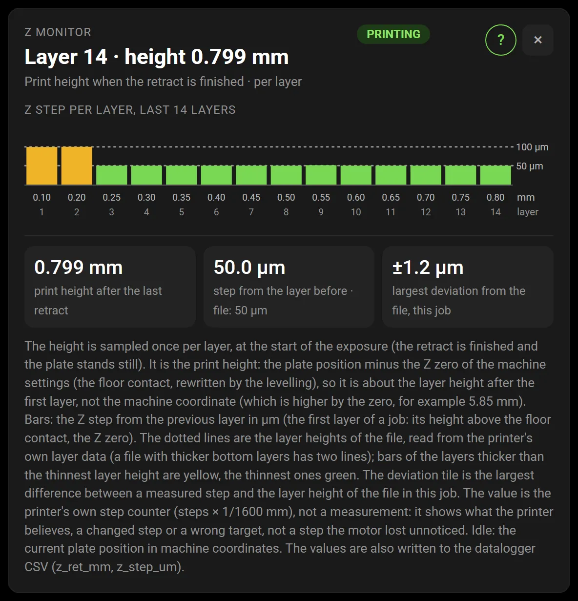
It is meant to verify the layer heights of prints with a dynamic (variable) layer height. Some slicers make thin layers where the detail is fine and thick layers where it is not, so the plate has to rise by a different amount on almost every layer, and a wrong step would silently change the shape of the part. The Z monitor shows, for every layer, where the plate stood when the retract was finished and compares each step with the layer height that the file asks for, so you can check that the part is built with the heights the slicer planned. It also shows whether the first layer started where it should.
Developer card → Z monitor…. Once per layer, at the start of the exposure (the retract is done and the plate stands still), the printer's Z position is read and shown as the print height: the plate position minus the Z zero (the floor contact found by the auto-leveling), so it is about the layer height after the first layer, not the machine coordinate. When no print runs the card shows the plate's machine position.
- Bars
- The Z step from the previous layer in µm (layer 1: its height above the floor contact). The number under a bar is the print height in mm, below it the layer number.
- Dotted lines
- The layer height of the file, one line for each height in the graph, read from the printer's own layer data (a file with thicker bottom layers or a variable layer height has one line for each height in the graph). Bars of layers thicker than the thinnest are yellow, the thinnest green.
- Tiles
- The print height after the last retract · the last step with the file's height · the largest difference between a measured step and the file's step in this job. A reading of about 0.6 µm is the resolution of the counter.
z_ret_mm and z_step_um.Flex Plate
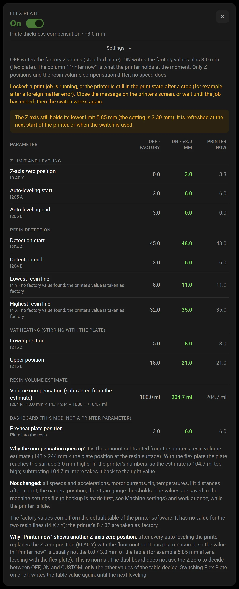
A flex build plate is about 3 mm thicker than the standard plate, so the plate face reaches the film 3 mm higher in the printer's own Z numbers. Every Z position that is measured from the film (zero, leveling, resin detection, vat heating) and the resin volume estimate have to move with it. Changing eleven values by hand when you swap plates is error-prone; the switch writes the whole set at once.
Settings card → Show → Flex Plate… opens the card (it is used seldom, so it is not on the Status card); the pill in the Status card shows FLEX PLATE OFF (all values factory), ON (factory + 3.0 mm) or CUSTOM (any other values, for example hand-tuned ones). Only Z positions and the resin volume compensation change; no speed does.
| Parameter | OFF · factory | ON · +3.0 mm |
|---|---|---|
Z-axis zero position I0 A0 Y | 0.0 | 3.0 |
Auto-leveling start / end I205 A / B | 3.0 / −3.0 | 6.0 / 0.0 |
Resin detection start / end I204 A / B | 45.0 / 3.0 | 48.0 / 6.0 |
Resin lines low / high I4 Y / X | 8 / 32 (the printer's values; the factory table has none) | 11 / 35 |
Vat heating lower / upper I215 Z / E | 5.0 / 18.0 | 8.0 / 21.0 |
Volume compensation I204 R | 100.0 ml | 204.7 ml |
| Pre-heat plate position (dashboard) | 3.0 mm | 6.0 mm |
The volume compensation is subtracted from the printer's resin estimate (143 × 244 mm × the plate position at the resin surface ÷ 1000). With the thicker plate that position is 3 mm higher, so the estimate is 104.7 ml too high; 104.7 ml more compensation takes it back, and the “enough resin?” check gives the same answer as on a standard printer.
I0 A0 Y) with the floor contact it has just measured, so “Printer now” usually shows another value than the 0.0 / 3.0 mm of the table (for example 3.3 mm). This is normal. The dashboard does not use the Z zero to decide between OFF, ON and CUSTOM: only the other values of the table decide.Wide layout
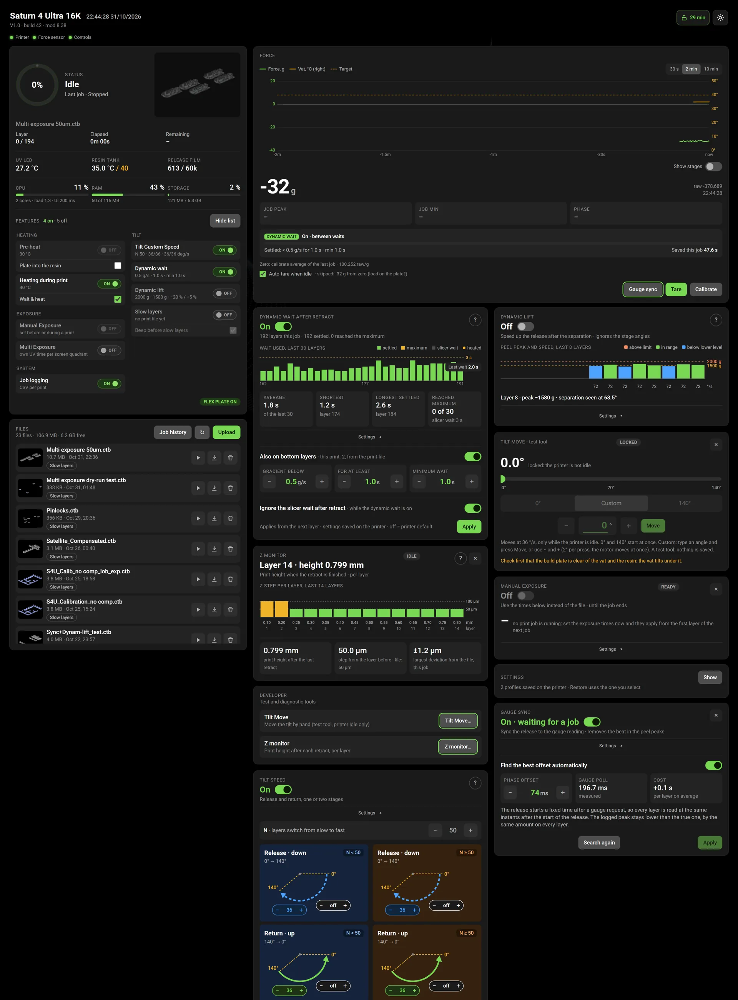
With many cards, a single column means a lot of scrolling. On a wide screen the cards spread over the whole window, so the force chart, the settings you are tuning and the file list are all visible at once.
In windows at least 900 px wide the cards are arranged in two zones by themselves (there is no switch). Left zone: Status, Files, Job history and the slow-layer lists. Right zone: the Force chart on top, then all other cards in two columns that are packed like masonry: every card takes the height it needs, and the next card goes into whichever column is shorter at that moment, so a short card never leaves a gap under it. Dynamic wait and Dynamic lift are the first two cards (left and right); a card you open goes right after them, the newest first. Folding or unfolding a card moves the cards below it. In windows narrower than 1200 px the cards stack in one column, Dynamic wait and Dynamic lift first. On a phone the zones become a single column.
What runs in the background
An over-the-air update would replace the modded firmware and the cloud link is not needed for local printing, so both are blocked. The app normally takes its clock from the (blocked) cloud server, which left it at 1970; the clock from the router keeps log times correct.
- No cloud, no OTA
- The Elegoo/Chitu cloud and update servers are blocked by name and by address.
- Clock from the router
- The printer takes the router's time (the HTTP Date header of the gateway, no time zone). If the router gives no time, the dashboard sets the clock from the browser once; NTP is a last fallback.
- Force logger
- Reads the gauge board and writes the live feed and the job logs.
- Controls helper
- Port 8080 (and port 80, which redirects to the page).
- Root telnet
- Port 23, the printer's own telnet service, with a root password set by the mod (the public release has a generic one).
- CPU patch
- Sleeps added to the app's three busy loops (section 5).
Camera and timelapse
The printer has a camera, but its stream is awkward to open (it speaks RTSP over UDP, which browsers cannot play). A small relay program on the printer turns it into a normal video that the dashboard plays, and the same relay takes one picture per layer for a timelapse without touching the print timing.
- Live view
- The Camera card (the Camera switch in the Status card opens it) plays the camera. It stops when you close the card and when a print starts. One viewer at a time. The stream has no login: anyone on your network can open port 8091.
- Timelapse
- The switch in the Camera card, read at the start of a job. The printer saves one picture per layer, taken just after the retract while the plate is at rest, and only while the plate is above Z = 40 mm (before that the plate is inside the vat and nothing is visible). A separate low-priority program takes the pictures: the print timing never changes, and a layer whose picture is not ready in time is skipped.
- Where the pictures go
- One H.264 file per job in the hidden folder
.timelapseon the files partition (about 200 KB per picture). All timelapses together are capped at 2 GiB: the oldest are deleted first, and the Camera card shows an amber warning when the cap is near. - Get the video
- The time-lapse button in the Print job history card downloads the file. Make the video on your PC:
ffmpeg -framerate 30 -i JOB.h264 -c copy JOB.mp4. Delete timelapse in the delete pop-up removes only the film and keeps the job log. - Start height
- The file
sglog/TLMINZ(whole mm, read at the start of each job) overrides the 40 mm;-1000means from the first layer.
Resin mixing
Resin that is heated without stirring gets hot near the heater and stays cool elsewhere, and cold resin is thick. Mixing moves the plate up and down in the resin for a few minutes, so the vat warms evenly. It replaces the old “Plate into the resin” option.
Mixing is in the Pre-heat part of the Resin heating card (minutes, Start / Stop) and has a switch in the Features list. For the set minutes the plate moves between a low position and 30 mm above it at 5 mm/s, then rises to Z = 50 mm at the end or on stop. The first descent into the resin is slow (2.5 mm/s) with the foreign matter guard active, so a real obstacle is still detected; after a clean arrival the guard limit is raised for the strokes and restored afterwards. Mixing cannot start while a print runs. The card warns when the pre-heat temperature is above 30 °C: use mixing then.
Resin profiles
A resin needs different exposure times for different layer heights. With variable layer height one file has several heights, and the slicer can only put one time per file. A profile holds the right times per height.
A profile has rows of thickness (µm), bottom time, normal time. Before each layer the printer measures the thickness from the Z move and takes the row within 1 µm (transition layers are graded between the row's two times). A layer without a row keeps the file's time and is counted as missing in the card. Pick the profile in the Resin profiles card, in the Features list (Resin profile) or in the Start print dialog. Manual Exposure wins over a profile, and a profile and Multi Exposure refuse each other.
Wait Times Testing
To choose the Dynamic wait values you need to know how long the resin takes to settle after a retract. This test measures it on a dry run with no UV, at the layer height you choose, with the vat at the temperature you choose.
Open it from the Developer card. Input: layer height and number of layers. It runs its own sequence from the levelling (calibrate in air, resin probe, auto-levelling with the machine's own settings), the first wait right after levelling, then per layer: tilt release at 36 °/s, plate rise by one layer height while the tilt returns, and a wait until settled. There is no maximum wait. The settle rule is two consecutive window averages that differ by less than the set force change. Wait & heat follows its dashboard setting. Every run writes its own log (sglog/waittest/waittest_<height>mm_<date>_<time>.csv: force, vat temperature, settle time per layer) that you can download and delete from the card. Short windows are noisy: about ±0.3 g at 3 s, so use 10 s or more and a force change of about twice the noise.
Machine settings safety
On 2026-11-06 the printer reset unexpectedly and the app rewrote its machine settings file with factory defaults (level threshold, tank target, hold currents, Z zero). Only an old backup existed. Now the file is backed up whenever it changes, and put back when the app loses it.
- At boot
- Before the app starts, the guard restores a missing, empty or invalid settings file (and
machine_info.bin) from the newest backup. A valid file is saved when it differs from the last backup. The files partition is not mounted yet at that moment, so the guard keeps a mirror on the boot partition (/media/mmcblk0p1/mg/: the last 3 settings files and the lastmachine_info.bin) and logs tomg/boot.logthere. - After start
- A watcher reads the app log for 150 s. If the app reports “can't find machine parameters” (it just wrote defaults), the newest backup is put back, the bad file is kept as
suspect_N.bin(last 3) andsglog/MACHRESETgets a time stamp. The running app still holds the defaults in memory: power cycle the printer to load the restored file, and do not press Flex Plate or Tilt Apply before. - Every minute
- The watcher saves a changed valid settings file as a rolling backup (the last 12 in
sglog/machine_backups/boot/) and refreshesmachine_info.binat most every 30 minutes. Log:sglog/machguard.log. - Switch off
- Create
/customer/mod/machguard_disableover telnet and reboot.
Switches and recovery
The printer is never opened, so a mistake must always be fixable from USB or with a file. The mod only changes the app partition; the boot loader and system partitions stay stock, and every feature checks the exact app version before it acts. On any other app version the features stay off.
Every part of the mod can be switched off without reflashing: create the file over telnet, then reboot.
| Create this file | Switches off |
|---|---|
/customer/mod/sgtap_disable | The whole mod library: force monitor, heating, dynamic wait, tilt, exposure, machine settings. Stock printer behaviour plus the CPU patch. |
/customer/mod/sgwait_disable | Dynamic wait, Wait & heat, tare in the wait, Settings and profiles |
/customer/mod/sgheat_disable | Heating control from the dashboard |
/customer/mod/sgtilt_disable | Two-stage tilt fix, tilt settings, Dynamic lift, gauge sync, Tilt Move |
/customer/mod/sgexpo_disable | Manual Exposure |
/customer/mod/sgmach_disable | Live machine settings and Flex Plate |
/customer/mod/sguisleep_disable | UI loop sleep setting (the patch's own value applies) |
/customer/mod/machguard_disable | The boot guard of the machine settings file |
/customer/mod/sgwebd_disable | The controls helper on port 8080 (the page becomes read-only) |
/media/mmcblk0p2/sglog/DISABLE | The CSV force logger |
Recovery
While the modded dashboard works, open Settings → Return to stock firmware. The printer checks its internal copy of the original V1.5.9 image, requires the printer to be idle and homed, the resin heating off and no USB stick inserted, then restarts and flashes that image. Never switch the printer off while the update bar is on its screen: the stock image also rewrites the boot loader. The restore asks for the printer password (the telnet root password); Settings → Printer password changes it. Five wrong passwords lock the critical actions for five minutes. It needs no USB stick or internet. This replaces the mod; saved machine settings and print files remain on their own partitions. Manually restart printer after reboot: once the automatic reboot finishes, turn the printer off and back on with its physical power switch. A soft reboot can cause a self-check error. If Flex Plate compensation is on, its Z settings remain after the stock flash: keep the flex plate mounted until those values are reset for a standard plate.
If the dashboard cannot run, put a known stock ChituUpgrade.bin on a FAT32 stick and power on; the printer flashes it and restarts. Check the file's md5 on the stick first: the printer does not verify it. A wrong machine setting is undone from Machine settings → Backups.
Settings files on the printer
Everything the dashboard sets is a small file, so settings survive a reboot and can be inspected or fixed over telnet if the dashboard is not reachable.
All in /media/mmcblk0p2/sglog/. The dashboard writes them; they can also be edited over telnet.
| File | Holds |
|---|---|
WAIT · WAITOV | Dynamic wait, Wait & heat, gradient, window, minimum, bottom layers, tare in the wait · ignore the slicer wait |
SETTINGS | The Standard profile of the Settings card |
profiles/ · fileprofile/ | One file per named settings profile · one file per print file naming its profile |
K | Force calibration (counts per gram) |
AUTOTARE_OFF | Present = auto-tare when idle is off |
TILT2 | Optional lead angle for the two-stage fix (the fix itself is always on) |
TILTCUSTOM · TILTOFF | The custom tilt profile · present = custom speeds off (stock applies) |
DYNLIFT · GSYNC | Dynamic lift settings (limit, lower level, steps, start layer) · gauge sync (on, automatic search, offset) |
MULTIEXPO | The four quadrant times and the two mirror flags of Multi Exposure (the ON switch is never saved: it ends with the job) |
LEVELS.csv | One line per print job with the Z zero found by its auto-leveling |
WAIT2 | Second set and minimum of the dynamic wait: "MIN2 N GRAD2 WIN2 NG" |
MXFROM | Multi Exposure start layer |
SLOWTILT · SLOWBEEP · SLOWOFF | The slow set · beep before slow layers · slow layers off |
layertilt/ | One slow-layer list per print file |
TIMELAPSE · TLMINZ | Present = timelapse on · start height in whole mm (default 40) |
RESIN · resins/ | The selected resin profile · one file per profile (thickness, bottom ms, normal ms) |
MACHRESET · machguard.log | Time stamp when the app was found to have reset its machine settings · log of the machine settings guard |
machine_backups/boot/ | Rolling backups of the machine settings file (last 12) and the suspect files; a mirror is on the boot partition in mg/ |
waittest/ | One log per Wait Times Testing run |
UISLEEP | UI loop sleep, idle and printing, in ms |
machine_backups/ | Backups of the machine settings file: before a Machine settings change, a restore, or a Flex Plate switch (the last 10) |
TILTTRACE | Present = detailed tilt trace (about 100 KB per layer; for tests only) |
calibration.log | Every calibration with its points |